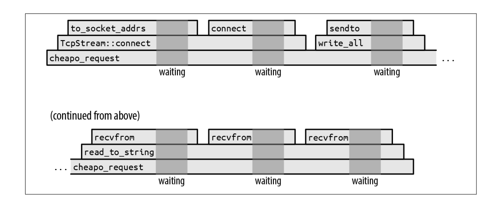
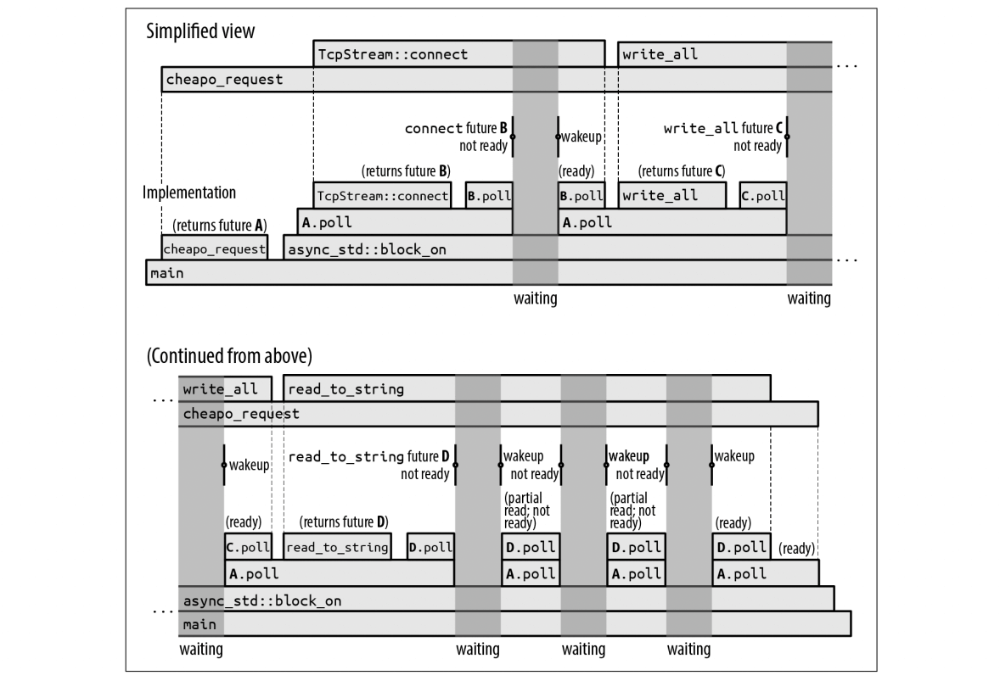
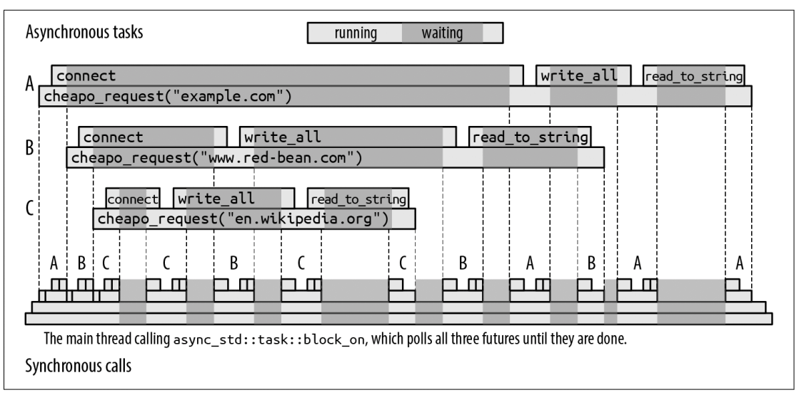
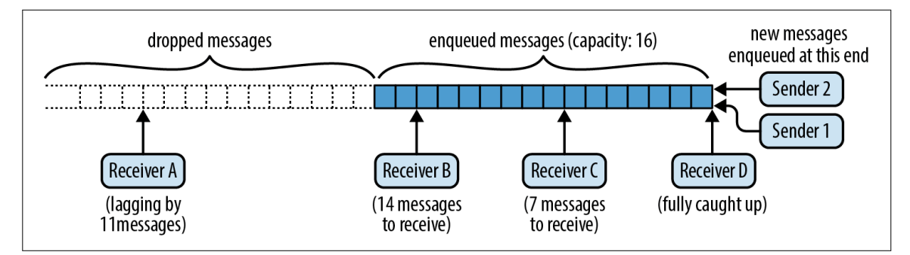
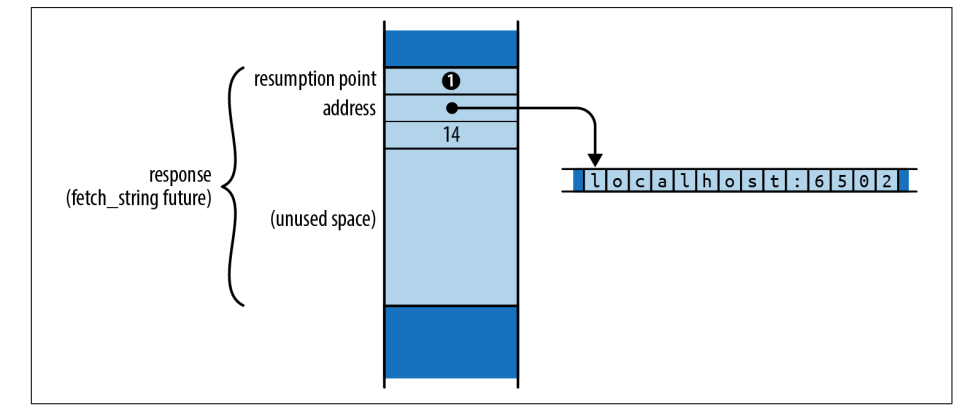
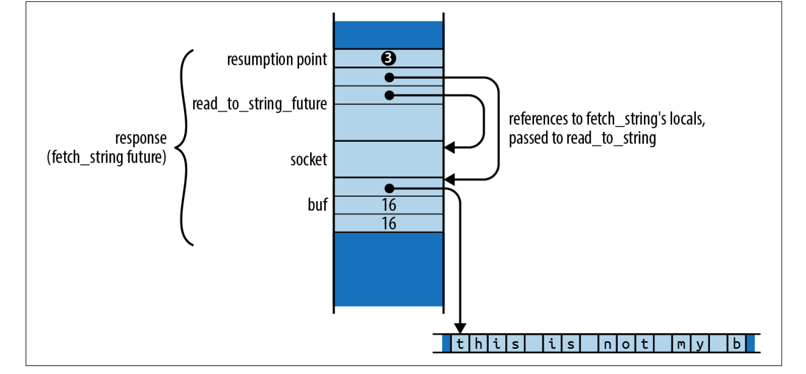
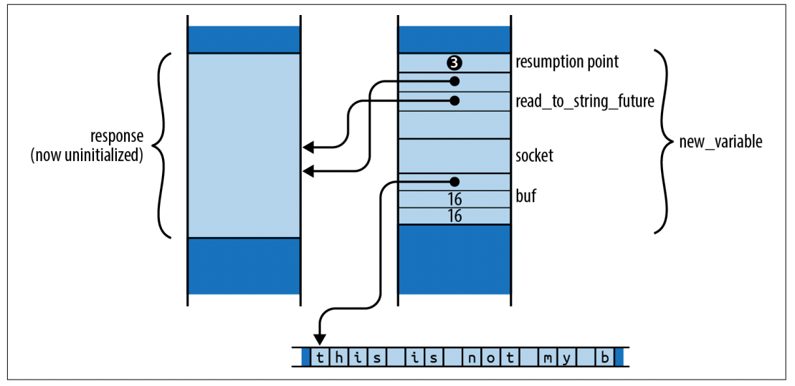

【Rust】异步编程
如果我们正在开发一个聊天室，并且使用线程处理每个连接，我们的代码可能看起来像下面这个样子：
1 | use std::{net, thread}; |
对于每个新连接，这都会产生一个运行 serve 函数的新线程，该线程能够专注于管理单个连接的处理。
这很好用，但是如果突然用户达到成千上万时，线程堆栈增长到 100 KiB 或这更多时，这可能要花费几个GB的内存。线程对于在多个处理器之间分配工作是非常好的一种形式，但是它们的内存需求使得我们在使用时要非常小心。
不过可以使用 Rust 异步任务在单个线程或工作线程池上并发运行许多独立活动。异步任务类似于线程，但创建速度更快，并且内存开销比线程少一个数量级。在一个程序中同时运行数十万个异步任务是完全可行的。当然，应用程序可能仍会受到网络带宽、数据库速度、计算或工作固有内存要求等其他因素的限制，但内存开销远没有线程那么多。
一般来说，异步 Rust 代码看起来很像普通的多线程代码，除了涉及到的 I/O 操作，互斥锁等阻塞操作需要稍微的不同处理。之前代码的异步版本如下所示：
1 | use async_std::{net, task}; |
这使用 async_std 的net和task模块，并在可能阻塞的调用之后添加 .await。但整体结构与基于线程的版本相同。
本节的目标不仅是帮助编写异步代码，而且还以足够详细的方式展示它的工作原理，以便可以预测它在应用程序中的表现，并了解它最有价值的地方。
-
为了展示异步编程的机制，我们列出了涵盖所有核心概念的最小语言特性集：
futures、异步函数、await表达式、task以及block_on和spawn_localexecutor； -
然后我们介绍异步代码块和
spawn executor。这些对于完成实际工作至关重要，但从概念上讲，它们只是我们刚刚提到的功能的变体。在此过程中，我们会可能会遇到一些异步编程特有的问题，但是需要学习如何处理它们； -
为了展示所有这些部分的协同工作，我们浏览了聊天服务器和客户端的完整代码，前面的代码片段是其中的一部分；
-
为了说明原始
futures和executors是如何工作的，我们提供了spawn_blocking和block_on的简单但功能性的实现； -
最后，我们解释了
Pin类型，它在异步接口中不时出现，以确保安全使用异步函数和futures；
异步世界
来看一段示例代码，来看它背后会发生什么？它通过一个 TCP 连接到了 Web 服务器，然后发送 HTTP 请求：
1 | use std::io::prelude::*; |
下图显示了该函数随时间的一个执行情况：

此图显示了函数调用堆栈如何随着时间从左到右运行，每个函数调用都是一个方块，放置在其调用者的顶部。显然，cheapo_request 函数贯穿整个执行过程。它调用 Rust 标准库中的函数，例如 TcpStream::connect 和 TcpStream 的 write_all 和 read_to_string 实现。它们依次调用其他函数，但最终程序会进行系统调用，例如打开 TCP 连接读取或写入一些数据。
深灰色背景标记程序等待操作系统完成系统调用的时间，这里没有按时间比例回执，否则整个图表将是深灰色：实际上，该函数几乎将所有时间都花在等待操作系统上，前面代码的执行将是系统调用之间的窄条。
当这个函数在等待系统调用返回时，它的单线程被阻塞：在系统调用完成之前它不能做任何事情。一个线程的堆栈大小为数十或数百千字节并不罕见，因此，如果这是某个更大系统的一个片段，许多线程都在从事类似的工作，那么锁定这些线程的资源除了等待之外什么都不做可能会变的很浪费。
为了解决这个问题，线程需要能够在等待系统调用完成时承担其他工作，但如何做到这一点并不简单。例如，我们用来从套接字读取响应的函数的签名是：
1 | fn read_to_string(&mut self, buf: &mut String) -> std::io::Result<usize>; |
这个函数在工作完成或出错之前，此函数不会返回，此函数是同步的：调用者在操作完成后恢复执行。如果我们想在操作系统工作的同时将我们的线程用于其他事情，我们将需要一个新的 I/O 库来提供该函数的异步版本。
Futures
Rust 为了实现异步编程引入了 std::future::Future：
1 | pub trait Future { |
Future 表示可以测试是否完成的操作。Future 的 poll 方法从不等待操作完成：它总是立即返回。如果操作完成，poll 返回 Poll::Ready(output)，其中 output 是它的最终结果，否则，它返回待处理。如果 future 可以再次轮询，它将通过调用一个waker（一个在上下文中提供的回调函数） 来让我们知道。
所有现代操作系统都包含其系统调用的变体，我们可以使用这些变体来实现这种轮询接口。例如，在 Unix 和 Windows 上，如果将网络套接字设置为非阻塞模式，则如果它们会阻塞，则读取和写入会返回错误，必须稍后再试。
因此 read_to_string 的异步版本将具有大致如下的签名：
1 | fn read_to_string(&mut self, buf: &mut String) -> impl Future<Output = Result<usize>>; |
这与我们之前展示的签名相同，除了返回类型：异步版本返回 Future<Output = Result<usize>>。需要轮询这个future，直到你得到一个 Ready(result) ，每次轮询时，都会尽可能读取，最终结果提供成功值或错误值，就像普通的 I/O 操作一样。这是一般模式：任何函数的异步版本都采用与同步版本相同的参数，但返回类型有一个 Future 包裹它。
调用这个版本的 read_to_string 实际上并没有读取任何内容；它的唯一职责是构建并返回一个在将来才能完成的工作。这个 future 必须包含执行请求所需的所有信息。例如，这个 read_to_string 返回的 future 必须记住调用它的输入流，以及它应该将传入数据附加到的 String。事实上，由于 future 持有引用 self 和 buf，read_to_string 的正确签名必须是：
1 | fn read_to_string<'a>(&'a mut self, buf: &'a mut String) -> impl Future<Output = Result<usize>> + 'a; |
这增加了生命周期，以表明返回的 future 只能在 self 和 buf 借用的值期间存在。
async-std 提供所有 std 的 I/O 工具的异步版本，包括带有 read_to_string 方法的异步 async_std::io::Read。 async-std 紧跟 std 的设计，尽可能在自己的接口中重用 std 的类型，因此错误、结果、网络地址和大多数其他相关数据在两个世界之间是兼容的。熟悉 std 有助于使用 async-std，反之亦然。
Future 的规则之一是，一旦 future 返回 Poll::Ready，就假设它永远不会被再次轮询。一些 future 如果被过度轮询，就会永远返回 Poll::Pending。（但是，它们不得违反内存或线程安全，或以其他方式导致未定义的行为。） Future 上的 fuse 适配器方法将任何 future 转换为永远返回 Poll::Pending 的 future。但是所有通常的 futrue 消费方式都遵守这条规则，所以通常不需要 fuse。
轮询听起来效率低下，但不要担心，Rust 的异步架构经过精心设计，因此只要基本 I/O 函数（如 read_to_string）正确实现，只会在值得的时候轮询 future，每次调用 poll 时，某个地方应该返回 Ready，或者至少朝着那个目标取得进展。
但是使用 future 似乎是一个挑战：如果进行轮询时，得到 Poll::Pending 时你应该怎么做？给这个线程找点其他的活干，还得回头再来轮询 future。那么整个程序将变得乱七八糟，跟踪哪个 future 还没 Ready ，以及一旦 Ready 应该做什么，这就破坏了程序的简单性。
Async、Await
我们更进一步，将 cheapo_request 写成异步函数：
1 | use async_std::io::prelude::*; |
这和我们之前的版本目的相同，除了：
-
函数以
async fn开始，而不是fn； -
使用了
async_std提供的TcpStream::connect，write_all和read_to_string异步版本，这些都返回了他们所代表结果的future； -
在每个返回
future的调用之后，代码都会显示.await。尽管这看起来像是对名为await的结构字段的引用，但它实际上是语言中内置的特殊语法，用于等待future准备好。await表达式的计算结果是future的最终值。这就是函数从connect、write_all和read_to_string获取结果的方式；
与普通函数不同，当您调用异步函数时，它会在主体开始执行之前立即返回。显然，调用的最终返回值还没有计算出来；你得到的是其最终值的future。因此，如果您执行此代码：
1 | let response = cheapo_request(host, port, path); |
那么 response 将是 std::io::Result<String> 的 future，cheapo_request 的主体尚未开始执行。你不需要调整异步函数的返回类型；Rust 自动将 async fn f(...) -> T 视为返回 T 的 future 的函数，而不是直接返回 T。
异步函数返回的 future 包含了函数体运行所需的所有信息：函数的参数、局部变量的空间等等。就好像将调用的堆栈帧捕获为普通的 Rust 值一样。因此 response 必须保存 host、port、path 传递的值，因为 cheapo_request 的主体将需要这些值才能运行。
Future 的特定类型由编译器根据函数的主体和参数自动生成。这种类型没有名字；你只知道它实现了 Future<Output=R>，其中 R 是异步函数的返回类型。从这个意义上说，异步函数的 future 就像闭包：闭包也有匿名类型，由编译器生成，实现了 FnOnce、Fn 和 FnMut。
当你第一次轮询 cheapo_request 返回的 future 时，执行从函数体的顶部开始，一直运行到 TcpStream::connect 返回的 future 的第一个 await。await 表达式轮询连接的 future，如果它还没有准备好，那么它返回 Poll::Pending 给它自己的调用者：轮询 cheapo_request 的 future 不能继续超过第一个 await，直到对 TcpStream::connect 的 future 的轮询返回 Poll::Ready。因此，表达式 TcpStream::connect(...).await 的大致等价于：
1 | { |
await 表达式获取 future 的所有权，然后对其进行轮询。如果它准备好了，那么 future 的最终值就是 await 表达式的值，然后继续执行。否则，它将 Poll::Pending 返回给它自己的调用者。
但至关重要的是，cheapo_request 的 future的下一次轮询不会再次从函数顶部开始：相反，它会在即将轮询 connect_future 的点恢复执行中间函数。在 futrue 准备好之前，不会进入异步函数的其余部分。
由于cheapo_request 的 future 继续被轮询，它将通过函数体从一个等待到下一个，只有当它等待的子 future 准备好时才会继续。因此，cheapo_request 的 future 必须轮询多少次取决于子 future 的行为和函数自己的控制流。cheapo_request 的 future跟踪下一次轮询应该恢复的点，以及恢复需要的所有本地状态——变量、参数、临时变量。
暂停执行中间函数然后稍后恢复的能力是异步函数所独有的。当一个普通函数返回时，它的堆栈帧就永远消失了。由于 await 表达式依赖于恢复的能力，只能在异步函数中使用它们。
调用异步函数
从某种意义上说，异步函数只是推卸责任。确实，在异步函数中很容易获得 future 的值：只需等待它。但是异步函数本身返回一个future，所以现在调用者的工作就是以某种方式进行轮询。最终，有人必须实际等待一个值。
我们可以使用 async_std 的 task::block_on 函数从普通的同步函数（例如 main）调用 cheapo_request ，该函数接受一个 future 并轮询它，直到它产生一个值：
1 | fn main() -> std::io::Result<()> { |
由于 block_on 是一个同步函数，它产生异步函数的最终值，你可以把它看作是从异步世界到同步世界的适配器。但是它的阻塞特性也意味着你永远不应该在异步函数中使用 block_on：它会阻塞整个线程，直到值准备好。
下图展示了 main 的一种可能执行：

上面的时间线简化视图显示了程序异步调用的抽象视图：cheapo_request 首先调用 TcpStream::connect 以获取套接字，然后在该套接字上调用 write_all 和 read_to_string，然后它返回，这与本节前面的 cheapo_request 同步版本的时间线非常相似。
但是这些异步调用中的每一个都是一个多步骤的过程：创建一个future，然后轮询它，直到它准备好，也许在这个过程中创建和轮询其他子 future，较低的时间线显示了实现此异步行为的实际同步调用，我们来看看这个异步函数的执行过程：
-
首先，
main调用cheapo_request，它返回其最终结果的Future A。然后main将这个Future传递给async_std::block_on，它会轮询它； -
轮询
Future A允许cheapo_request的主体开始执行，它调用TcpStream::connect以获取套接字的Future B，然后等待。更准确地说，由于TcpStream::connect可能会遇到错误，因此B是Result<TcpStream, std::io::Error>的future； -
Future B被await轮询，由于网络连接尚未建立，B.poll返回Poll::Pending，但会在套接字准备好后安排唤醒调用任务； -
由于
Future B尚未准备好，A.poll将Poll::Pending返回给它自己的调用者block_on； -
由于
block_on无事可做，它进入睡眠状态，现在整个线程都被阻塞了； -
当
B的连接准备好使用时，它会唤醒轮询它的任务，这会激发block_on的作用，并尝试再次轮询Future A； -
轮询
A导致cheapo_request在其第一次等待中恢复，并再次轮询B； -
这一次，
B准备就绪：套接字创建完成，所以它返回Poll::Ready(Ok(socket))给A.poll； -
对
TcpStream::connect的异步调用现已完成，TcpStream::connect(...).await表达式的值因此是Ok(socket)； -
cheapo_request的主体的执行正常进行，使用format!构建请求字符串并将其传递给socket.write_all； -
由于
socket.write_all是一个异步函数，它返回其结果的future C，cheapo_request适当地等待；
代码的其余部分是相似的，如上图所示，socket.read_to_string 的 future 在它准备好之前被轮询了4次；这些唤醒中的每一个都从套接字读取一些数据，但 read_to_string 被指定为一直读取到输入的末尾，这需要几个操作。
编写一个一遍又一遍地调用 poll 的循环听起来并不难，但是 async_std::task::block_on 的好处是它知道如何进入睡眠状态，直到 future 实际上值得再次轮询，而不是浪费处理器时间和电池寿命进行数十亿次毫无结果的轮询调用。由基本 I/O 函数，如 connect 和 read_to_string，返回的 future 保留由传递给 poll 的 Context 所提供的waker，并在 block_on 应该唤醒并再次尝试轮询时调用它。
与我们之前介绍的原始同步版本一样，cheapo_request 的这个异步版本几乎将所有时间都花在等待操作完成上。如果按比例绘制时间轴，则该图将几乎完全是深灰色。
通常可以只考虑简化的上部时间线：一些函数调用是同步的，另一些是异步的并且需要等待，但它们都只是函数调用。Rust 异步支持的成功取决于帮助程序员在实践中使用简化视图，而不会被来回的实现分心。
创建异步任务
async_std::task::block_on 函数会阻塞到 future 的值准备好。但是在一个 future 上完全阻塞一个线程并不比同步调用好：本节的目标是让线程在等待时做其他工作。
为此，可以使用 async_std::task::spawn_local，这个函数接受一个 future 并将其添加到一个池中。因此，如果将一堆 future 传递给 spawn_local，然后将 block_on 应用于最终结果的 future，那么 block_on 就会轮询每个生成的 future，同时运行整个池，直到结果准备好。
要启用 spawn_local，必须启用 async-std 中的不稳定功能：
1 | async-std = { version = "1", features = ["unstable"] } |
spawn_local 函数是标准库用于启动线程的 std::thread::spawn 函数的异步实现：
-
std::thread::spawn(c)接受一个闭包c并启动一个运行它的线程，返回一个std::thread::JoinHandle，其join方法等待线程完成并返回c的返回值； -
async_std::task::spawn_local(f)获取futuref并将其添加到池中，以便在当前线程调用block_on时进行轮询。spawn_local返回它自己的async_std::task::JoinHandle类型，它本身就是一个future，你可以等待检索f的最终值。
例如，假设我们要同时发出一整套 HTTP 请求。这是第一次尝试：
1 | pub async fn many_requests(requests: Vec<(String, u16, String)>) -> Vec<std::io::Result<String>> { |
这个函数对请求的每个元素调用 cheapo_request，将每个调用的 future 传递给 spawn_local，它将生成的 JoinHandles 收集到一个 vector 中，然后等待它们中的每一个完成。可以按任何顺序等待连接句柄：由于请求已经产生，因此只要该线程调用 block_on 并且没有其他的事情可做，就会对所有 handles 进行轮询，所有请求将同时运行。一旦完成，many_requests 会将结果返回给它的调用者。
前面的代码几乎是正确的，但是 Rust 认为 cheapo_request 的参数 host 不太对：
error: `host` does not live long enough
handles.push(task::spawn_local(cheapo_request(&host, port, &path)));
---------------^^^^^--------------
| |
| borrowed value does not
| live long enough
argument requires that `host` is borrowed for `'static`
}
- `host` dropped here while still borrowed
path 也有类似的错误。自然，如果我们将引用传递给异步函数，它返回的future必须持有这些引用，因此 future 不能安全地比它们借用的值更长寿，这与适用于任何包含引用的值的限制相同。
问题是 spawn_local 不能确定你会在 host 和 path 被删除之前等待任务完成。事实上，spawn_local 只接受生命周期为'static 的 future，因为可以简单地忽略它返回的 JoinHandle，让任务在程序执行的其余部分继续运行。这并不是异步任务所独有的：如果你尝试使用 std::thread::spawn 来启动一个线程，该线程的闭包捕获了对局部变量的引用，你会得到类似的错误。
解决这个问题的一种方法是创建另一个异步函数，它接受所有权版本的参数：
1 | async fn cheapo_owning_request(host: String, port: u16, path: String) -> std::io::Result<String> { |
这个函数接受字符串而不是 &str 引用，所以它的 future 拥有 host 和 path 字符串本身，它的生命周期是 'static 的。借用检查器可以看到它立即等待 cheapo_request 的 future，因此，如果这个 future 正在被轮询，它借用的 host 和 path 变量肯定仍然存在。
使用 cheapo_owning_request，可以像这样生成所有请求：
1 | for (host, port, path) in requests { |
也可以从 main 函数通过 block_on 调用 many_requests：
1 | let requests = vec![ |
此代码在对 block_on 的调用中同时运行所有 3 个请求，每个都有机会被运行，而且它们都在相同的调用线程上，下图显示了对 cheapo_request 的 3 个调用的一种可能执行：

对 many_requests 的调用（为简单起见，未显示）产生了 3 个异步任务，我们将它们标记为 A、B 和 C。block_on 从轮询 A 开始，它开始连接到 example.com，一旦返回 Poll::Pending，block_on 就会将注意力转移到下一个任务上，轮询 B，最终轮询 C，每个都开始连接到各自的服务器。当所有可轮询的 future 都返回 Poll::Pending 时，block_on 进入睡眠状态，直到 3 个 TcpStream::connect 的 future 之一反馈连接已经准备好，可以再次轮询。
在本次执行中，服务器 en.wikipedia.org 的响应速度比其他服务器更快，因此该任务首先完成。当一个任务完成时，它会将其值保存在其 JoinHandle 中并将其标记为 Ready，以便 many_requests 在等待它时可以继续。最终，对 cheapo_request 的其他调用要么成功，要么返回错误，并且 many_requests 本身可以返回。最后，main 从 block_on 接收结果vector。
所有这些执行都发生在一个线程上，对 cheapo_request 的 3 个调用通过对它们的 future 的连续轮询相互交错。异步调用看起来像要等到函数运行完成，但这种异步调用是通过对 future 的 poll 方法一系列同步调用来实现的。每个单独的轮询调用快速返回，让出线程，以便另一个异步调用可以轮流。
我们终于实现了我们在本节开头设定的目标：让线程在等待 I/O 完成的同时承担其他工作，这样线程的资源就不会白白浪费。更好的是，这个目标是用看起来很像普通 Rust 代码的代码实现的：一些函数被标记为 async，一些函数调用后跟 .await，我们使用来自 async_std 的函数而不是 std，但除此之外，都是些普通的 Rust 代码。
异步任务和线程之间要记住的一个重要区别是，从一个异步任务切换到另一个异步任务只发生在 await 表达式中，此时正在等待的 future 返回 Poll::Pending。这意味着如果你在 cheapo_request 中放置一个长时间运行的计算，你传递给 spawn_local 的其他任务在它完成之前都没有机会运行。有了线程，这个问题就不会出现：操作系统可以在任何时候挂起任何线程并设置计时器以确保没有线程独占处理器，异步代码取决于共享线程的 future 的自愿合作。
异步代码块
除了异步函数，Rust 还支持异步代码块。普通块语句返回其最后一个表达式的值，而异步代码块返回其最后一个表达式的值的 future ，你可以在异步代码块中使用 await 表达式。
async 块看起来像一个普通的块语句，前面有 async 关键字：
1 | let serve_one = async { |
这将使用future初始化 serve_one，当被轮询时，它会侦听并处理单个 TCP 连接。在轮询 serve_one 之前，代码块的主体不会开始执行，就像异步函数调用在轮询其future之前不会开始执行一样。
如果将 ? 操作符应用到异步代码块中的错误，它只是从块中返回，而不是从周围的函数中返回。例如，如果前面的绑定调用返回错误，则 ? 运算符将其作为 serve_one 的最终值返回。同样，return 表达式从 async 块返回，而不是包裹它的函数。
如果一个异步代码块引用了在周围代码中定义的变量，它的 future 会捕获它们的值，就像 move 闭包一样，可以使用 async move 启动块以获取捕获值的所有权，而不仅仅是持有对它们的引用。
异步代码块提供了一种简洁的方法来分离出希望异步运行的一段代码。例如，在上一节中，spawn_local 需要一个 静态 future，因此我们定义了 cheapo_owning_request 包装函数来为我们提供一个拥有其参数所有权的 future，然而只需从异步代码块中调用 cheapo_request，就可以获得相同的效果：
1 | pub async fn many_requests(requests: Vec<(String, u16, String)>) -> Vec<std::io::Result<String>> { |
由于这是一个 async move 代码块，它的 future 将拥有字符串值 host 和 path 的所有权，就像移动闭包一样。然后它传递对cheapo_request 的引用。借用检查器可以看到块的 await 表达式拥有 cheapo_request 的 future 所有权，因此对 host 和 path 的引用不能超过它们借用的捕获变量。async 代码块完成与 cheapo_owning_request 相同的事情，但代码更少。
如何指定异步代码块的返回值吗？初次使用我们可能会写出如下的代码：
1 | let input = async_std::io::stdin(); |
编译这段代码会遇到下面的错误：
error: type annotations needed
|
| let future = async {
| ------ consider giving `future` a type
...
| input.read_line(&mut line).await?;
| ^^^^^^^^^^^^^^^^^^^^^^^^^^^^^^^^^ cannot infer type
Rust 无法判断异步代码块的返回类型应该是什么。read_line 方法返回 Result<(), std::io:Error>，但是因为 ? 运算符使用 From 将手头的错误类型转换为任何情况需要的类型，对于实现 From<std::io::Error> 的任何类型 E，异步代码块的返回类型可以是 Result<(), E>。
Future 版本的 Rust 可以添加用于指示异步代码块的返回类型的语法，例如，确定返回类型：
1 | let future = async { |
由于 Result 是一个泛型类型，它期望成功和错误类型作为其参数，因此我们可以在使用 Ok 或 Err 时指定这些类型参数，如上所示。
构造异步函数
异步代码块为我们提供了另一种方法来获得与异步函数相同的效果，并且具有更多的灵活性。例如，我们可以将我们的 cheapo_request 示例编写为一个普通的同步函数，它返回一个异步代码块的future：
1 |
|
当您调用此版本的函数时，它会立即返回异步代码块值的 future，这捕获了函数的参数，并且表现得就像异步函数返回的 future一样。由于我们没有使用 async fn 语法，我们需要在返回类型中写出 impl Future，但就调用者而言，这两个定义是相同函数签名的可互换实现。
当想在调用函数时立即进行一些计算，然后再创建其结果的 future 时，第二种方法可能很有用。例如，协调 cheapo_request 和spawn_local 的另一种方法是将它变成一个同步函数，返回一个'static future，捕获其参数的完全拥有的副本：
1 | fn cheapo_request(host: &str, port: u16, path: &str) -> impl Future<Output = io::Result<String>> + 'static |
此版本允许异步代码块将 host 和 path 捕获为拥有的字符串值，而不是 &str 引用。由于 future 拥有它运行所需的所有数据，因此它在 'static 生命周期内有效。（我们在前面显示的签名中拼出了 + 'static，但 'static 是 -> impl 返回类型的默认值，因此省略它不会有任何效果。）
由于这个版本的 cheapo_request 返回的是'static future，我们可以将它们直接传递给 spawn_local：
1 | let join_handle = async_std::task::spawn_local( |
使用线程池
当单个线程无法完成较大的计算量时，可以使用 async_std::task::spawn 将 future 分派到一个工作线程池上，该线程池专用于轮询 future。
async_std::task::spawn 像 async_std::task::spawn_local 一样使用：
1 | use async_std::task; |
与 spawn_local 一样，spawn 返回一个 JoinHandle 值，可以等待以获取 future 的最终值。但与 spawn_local 不同的是，future 不必等到你调用 block_on 才能被轮询，一旦线程池中的一个线程空闲，它将尝试轮询它。
在实践中，spawn 比 spawn_local 使用更广泛，它能够将工作负载分摊到不同的线程之上。
使用 spawn 时要记住的一件事是线程池试图保持忙碌，因此 future 会被首先访问它的线程轮询。异步调用可能在一个线程上开始执行，在await 表达式上阻塞，然后在另一个线程中恢复。因此，虽然将异步函数调用视为单个、连续的代码执行是一种合理的简化（实际上，异步函数和await 表达式的目的是鼓励你这样想），但调用可能实际上是由许多不同的线程来执行的。
如果使用的是线程本地存储，那么在 await 表达式之前放置的数据可能会被完全不同的东西替换，因为任务现在正在由池中的不同线程轮询，但也可以改用 async_std::task_local 来实现。
Future 实现 Send
spawn 有一个限制 spawn_local 没有。由于 future 被发送到另一个线程运行，future 必须实现 Send。只有当它包含的所有值都是 Send 时，Future 才是 Send：所有函数参数、局部变量，甚至匿名临时值都必须可以安全移动到另一个线程。
和以前一样，这个要求并不是异步任务所独有的：如果你尝试使用 std::thread::spawn 来启动一个其闭包捕获 non-Send 值的线程，你会得到一个类似的错误。不同之处在于，虽然传递给 std::thread::spawn 的闭包保留在为运行它而创建的线程上，但在线程池上生成的 future 可以在它等待的任何时候从一个线程移动到另一个线程。
这个限制很容易被意外遇到，例如，下面的代码看起来很无辜：
1 | use async_std::task; |
异步函数的 future 需要保存足够的信息，以便函数从 await 表达式继续。在这种情况下，reluctant 函数的 future 必须在等待之后使用字符串，所以 future 至少有时会包含一个 Rc<String> 值。由于 Rc 指针不能在线程之间安全地共享，future 本身不能被Send。由于 spawn 只接受 Send 的future，Rust 报错了：
error: future cannot be sent between threads safely
|
| task::spawn(reluctant());
| ^^^^^^^^^^^ future returned by `reluctant` is not `Send`
|
|
| T: Future + Send + 'static,
| ---- required by this bound in `async_std::task::spawn`
|
= help: within `impl Future`, the trait `Send` is not implemented
for `Rc<String>`
note: future is not `Send` as this value is used across an await
|
| let string = Rc::new("ref-counted string".to_string());
| ------ has type `Rc<String>` which is not `Send`
|
| some_asynchronous_thing().await;
| ^^^^^^^^^^^^^^^^^^^^^^^^^^^^^^^
await occurs here, with `string` maybe used later
...
| }
| - `string` is later dropped here
错误信息很长，但它有很多帮助信息：
-
它解释了为什么需要
future实现Send：task::spawn需要它； -
它解释了哪个值不是
Send：局部变量字符串，其类型为Rc<String>； -
它解释了为什么字符串会影响
future：它在指定的等待范围内；
有两种方法可以解决此问题，一种是限制 non-Sennd 的范围，使其不覆盖任何 await 表达式，因此不需要保存在函数的 future ：
1 | async fn reluctant() -> String { |
另一种解决方案是简单地使用 std::sync::Arc 而不是 Rc。Arc 使用原子更新来管理它的引用计数，这使得它有点慢，但 Arc 指针是 Send。尽管最终将学会识别和避免 non-Send 类型，但起初它们可能会有点令人惊讶。例如，旧的 Rust 代码有时会使用这样的通用Result 类型：
1 | // 不推荐 |
此 GenericError 类型使用 Box 对象来保存实现 std::error::Error 的任何类型的值。但它并没有对其施加任何进一步的限制：如果有人有一个实现 Error 的 non-Send 类型，他们可以将该类型的装箱值转换为 GenericError。由于这种可能性，GenericError 不是 Send，以下代码将不起作用：
1 | fn some_fallible_thing() -> GenericResult<i32> { |
与前面的示例一样，来自编译器的错误消息将解释了发生了什么，并指出 Result 类型是罪魁祸首。由于 Rust 认为 some_fallible_thing 的结果存在于整个 match 语句中，包括 await 表达式，它确定 unfortunate 的future不是 Send。这个错误对 Rust 来说是过于谨慎了：虽然 GenericError 确实不能安全地发送到另一个线程，但 await 仅在结果为 Ok 时发生，因此当我们 await use_output 的 future 时，错误值实际上并不存在。
理想的解决方案是使用更严格的通用错误类型：
1 | type GenericError = Box<dyn std::error::Error + Send + Sync + 'static>; |
这个 trait 对象明确需要底层错误类型来实现 Send，如果你的 future 不是 Send 并且不能方便地做到这一点，那么仍然可以使用 spawn_local 在当前线程上运行它。当然，需要确保线程在某个时候调用了 block_on，让它有机会运行，但是这样的话，就不能负载分担了。
yield_now、spawn_blocking
为了让 future 能够与其他任务很好地共享它的线程，它的 poll 方法应该总是尽可能快地返回。但是如果正在执行一个长时间的计算，可能需要很长时间才能到达下一个等待，这使得其他异步任务等待的时间比想要的要长。
避免这种情况的一种方法是偶尔等待某些东西。async_std::task::yield_now 函数返回一个为此设计的简单 future：
1 | while computation_not_done() { |
第一次轮询 yield_now 时，它返回 Poll::Pending，但表示值得很快再次轮询。效果是异步调用让出了线程并让其他任务有机会运行，但调用将很快获得另一轮。yield_now 的 future 第二次被轮询，它返回 Poll::Ready(())，async 函数可以恢复执行。
然而，这种方法并不总是可行的。如果使用外部 crate 进行长时间运行的计算或调用 C 或 C++，则将代码更改为更加异步友好可能并不方便，或者可能很难确保通过计算的每条路径都一定会时不时地等待。
对于这种情况，您可以使用 async_std::task::spawn_blocking。这个函数接受一个闭包，启动它在自己的线程上运行，并返回代表其返回值的 future。异步代码可以等待那个 future，将其线程让给其他任务，直到计算准备好。通过将繁重的工作放在单独的线程上，可以让操作系统负责让它很好地共享处理器。
例如，假设我们需要根据我们存储在身份验证数据库中的散列版本检查用户提供的密码。为了安全起见，验证密码需要进行大量计算，这样即使攻击者获得了我们数据库的副本，他们也不能简单地尝试数万亿个可能的密码来查看是否匹配。argonautica 提供了一个专门为存储密码而设计的散列函数：一个正确生成的 argonautica 散列需要很长时间来验证。我们可以在异步应用程序中使用 argonautica，如下所示：
1 | async fn verify_password( |
如果密码与哈希、给定密钥、整个数据库的密钥匹配，则返回 Ok(true)。通过在传递给 spawn_blocking 的闭包中进行验证，我们将昂贵的计算推送到它自己的线程上，确保它不会影响我们对其他用户请求的响应。
异步设计
在许多方面，Rust 的异步编程方法类似于其他语言所采用的方法。例如，JavaScript、C# 和 Rust 都具有带有 await 表达式的异步函数。所有这些语言都有代表不完整计算的值：Rust 称它们为 futures，JavaScript 称它们为 promises，C# 称它们为tasks，但它们都代表一个可能需要等待的值。
然而，Rust 对轮询的使用是不寻常的，在 JavaScript 和 C# 中，异步函数一被调用就开始运行，并且系统库中内置了一个全局事件循环，当它们等待的值可用时恢复暂停的异步函数调用。然而，在 Rust 中，异步调用什么都不做，除非你将它传递给像 block_on、spawn 或 spawn_local 这样的函数，该函数将轮询它并推动工作完成。这些称为`executor`的函数扮演着其他语言中全局事件循环的角色。
因为 Rust 让开发者选择一个 executor 来轮询 future，Rust 不需要系统中内置的全局事件循环。async-std 提供了到目前为止我们使用的 executor 函数，tokio 定义了自己的一组类似的 executor 函数，可以在同一个程序中使用多个 executor。
异步 HTTP 客户端
下面是使用 surf 实现一个异步客户端，也可以选择 reqwest 这是对之前的 many_requests 的重写：
1 |
|
使用单个 surf::Client 发出我们的所有请求，如果其中几个请求指向同一服务器，我们可以重用 HTTP 连接。并且不需要异步代码块：因为 recv_string 是一个异步方法，它返回一个实现了 Send + 'static 的 future，我们可以将它直接传递给 spawn。
异步示例
本节实现一个简单的异步聊天服务器和客户端，能避免因单个客户端的网络连接速度很慢而影响其他客户端的场景，使用下面的命令创建我们的工程：
cargo new --lib --vcs none async-chat
并且添加以下依赖：
1 | [dependencies] |
这个时候我们的目录看起来如下所示：
/Users/fudenglong/WORKDIR/rust/async-chat
├── Cargo.lock
├── Cargo.toml
└── src
| └── lib.rs
完整的代码请看 https://github.com/ProgrammingRust/async-chat。
定义 Error 和 Result
我们增加一个新文件，src/utils.rs 包含我们的 Error 和 Result 类型：
1 | use std::error::Error; |
这些是通用错误类型。async_std、serde_json 和 tokio 都定义了自己的错误类型，但是它们都实现了标准库的 From，? 运算符可以自动将它们全部转换为 ChatError，可以将任何合适的错误类型转换为 Box<dyn Error + Send + Sync + 'static>。Send 和 Sync 边界确保如果分发到另一个线程的任务失败，它可以安全地将错误报告给主线程。
在实际应用中，考虑使用 anyhow，它提供了与这些类似的 Error 和 Result 类型。 anyhow 易于使用，并提供了一些不错的功能，超出了我们的 ChatError 和 ChatResult 可以提供的功能。
Protocol
library crate 以这两种类型捕获了我们的整个聊天协议，在 src/lib.rs 中定义：
1 | use serde::{Deserialize, Serialize}; |
FromClient 代表客户端可以发送到服务器的数据包：它可以请求加入一个房间并将消息发布到它已加入的任何房间。FromServer 表示服务器可以发回的内容：发布到某个组的消息和错误消息。使用引用计数的 Arc<String> 而不是普通的 String 有助于服务器在管理组和分发消息时避免复制字符串。
#[derive] 属性告诉 serde 为 FromClient 和 FromServer 生成其 Serialize 和 Deserialize 的实现。 这让我们可以调用 serde_json::to_string 将它们转换为 JSON 值，通过网络发送它们，最后调用 serde_json::from_str 将它们转换回 Rust 形式。
test_fromclient_json 单元测试说明了它是如何使用的。给定由 serde 派生的 Serialize 实现，我们可以调用 serde_json::to_string 将给定的 FromClient 值转换为这个 JSON：
1 | {"Post":{"group_name":"Dogs","message":"Samoyeds rock!"}} |
然后派生的 Deserialize 实现将其解析回等效的 FromClient 值。请注意，FromClient 中的 Arc 指针对序列化形式没有影响：引用计数的字符串直接显示为 JSON 对象成员值。
获取用户输入
我们聊天客户端的首要职责是读取用户的命令，并将相应的数据包发送到服务器。我们将做最简单可行的事情：直接从标准输入读取行。我们新建一个可执行文件：src/bin/client.rs，包含我们的客户端代码：
1 | use async_chat::utils::{self, ChatResult}; |
这会调用 async_std::io::stdin 来获取客户端标准输入的异步句柄，将其包装在 async_std::io::BufReader 中，然后调用 lines 逐行处理用户的输入。它尝试将每一行解析为对应于某个 FromClient 值的命令，如果成功，则将该值发送到服务器。如果用户输入了无法识别的命令，则 parse_command 会打印错误消息并返回 None，因此 send_commands 可以再次绕过循环。如果用户键入文件结束指示，则返回 None，并且 send_commands 返回。这与在普通同步程序中编写的代码非常相似，只是它使用了 async_std 版本的库功能。
异步 BufReader 的 lines 方法很有趣，它不能像标准库那样返回迭代器：Iterator::next 方法是一个普通的同步函数，所以调用 commands.next() 会阻塞线程，直到下一行准备好，相反，lines 返回一个 Result<String> 流。流是迭代器的异步模拟：它以异步友好的方式按需生成一系列值。这是来自 async_std::stream 模块的 Stream 的定义：
1 | pub trait Stream { |
可以将其视为 Iterator 和 Future 的混合体。与迭代器一样，Stream 具有关联的 Item 类型并使用 Option 来指示序列何时结束。但就像future一样，必须对流进行轮询：要获取下一项（或得知流已结束），必须调用 poll_next 直到它返回 Poll::Ready。流的 poll_next 实现应该总是快速返回，没有阻塞。如果一个流返回 Poll::Pending，它必须在值得通过 Context 再次轮询时通知调用者。
poll_next 方法很难直接使用，但通常不需要这样做。与迭代器一样，流具有广泛的实用方法集合，例如过滤器和映射。其中有一个 next 方法，它返回流的下一个 Option<Self::Item> 的future。可以调用 next 并等待它返回的future，而不是显式轮询流。
将这些部分放在一起，send_commands 通过使用 next 和 while let 循环流产生的值来消费输入流中的值：
1 | while let Some(item) = stream.next().await { |
在它返回 Poll::Ready(None) 时就像在一个迭代器返回 None 之后在它上调用 next。与 futures 和 Iterator一样，流也有一个 fuse 方法来确保此类调用在需要时表现得可预测。使用流，必须包含导入：
1 | use async_std::prelude::*; |
这是因为 Stream 的实用方法，如 next、map、filter 等，实际上并未在 Stream 本身上定义。相反，它们是一个单独的 StreamExt 的默认方法，它为所有 Streams 自动实现：
1 | pub trait StreamExt: Stream { |
发包
为了在网络套接字上传输数据包，我们的客户端和服务器使用我们库 crate 的 utils 模块中的 send_as_json 函数，我们在 src/utils.rs 中增加以下内容：
1 | use async_std::prelude::*; |
此函数将数据包的 JSON 表示构建为字符串，在末尾添加换行符，然后将其全部写入 outbound。
从它的 where 子句中，可以看到 send_as_json 非常灵活。要发送的数据包类型 P 可以是任何实现 serde::Serialize 的东西。输出流 S 可以是任何实现 async_std::io::Write 的东西，它是输出流的 std::io::Write 的异步版本。这足以让我们在异步 TcpStream 上发送 FromClient 和 FromServer 值。使用 write_all 方法需要对 S 进行 Unpin 约束。
send_as_json 不是将数据包直接序列化到 outbound，而是将其序列化为临时字符串，然后将其写入outbound。serde_json 确实提供了将值直接序列化到输出流的函数，但这些函数仅支持同步流。写入异步流需要对 serde_json 和 serde 进行根本更改，因为它们设计的Trait具有同步方法。
与流一样，async_std 的 I/O 许多方法实际上是在Ext Trait上定义的，因此请务必记住在使用它们时使用 async_std::prelude::*。
收包
为了接收数据包，我们的服务器和客户端将使用 utils 模块中的这个函数从异步缓冲 TCP 套接字 async_std::io::BufReader<TcpStream> 接收 FromClient 和 FromServer 值，我们在 src/utils.rs 中继续增加以下函数：
1 | use serde::de::DeserializeOwned; |
与 send_as_json 一样，此函数是泛型的：
-
流类型
S必须实现async_std::io::BufRead，它是std::io::BufRead的异步模拟，表示缓冲的输入字节流； -
数据包类型
P必须实现DeserializeOwned，这是serde的Deserialize的更严格的变体。为了提高效率，Deserialize可以生成&str和&[u8]值，这些值直接从它们被反序列化的缓冲区借用它们的内容，以避免复制数据。然而，在我们的例子中，这并不好：我们需要将反序列化的值返回给我们的调用者，所以它们必须能够比我们从中解析它们的缓冲区更长寿。实现DeserializeOwned的类型始终独立于反序列化的缓冲区。
调用 inbound.lines() 给我们一个 std::io::Result<String> 值的流。然后，我们使用流的 map 适配器对每个项目应用闭包，处理错误并将每一行解析为 P 类型值的 JSON 形式。这为我们提供了 ChatResult<P> 值的流，我们直接返回，函数的返回类型是：
1 | impl Stream<Item = ChatResult<P>> |
这表明我们返回了一些异步生成一系列 ChatResult<P> 值的类型，但我们的调用者无法准确判断它是哪种类型。由于我们传递给 map 的闭包都是匿名类型，这是 receive_as_json 可能返回的最具体的类型。请注意，receive_as_json 本身并不是一个异步函数。它是一个返回异步值的普通函数。
要查看 receive_as_json 是如何使用的，这里是我们聊天客户端的 handle_replies 函数，来自 src/bin/client.rs，它从网络接收 FromServer 值流并将它们打印出来供用户查看（我们需要在 src/bin/client.rs 增加如下代码）:
1 | use async_chat::FromServer; |
这个函数接受一个从服务器接收数据的套接字，在它周围包裹一个 async_std::io::BufReader，然后将它传递给 receive_as_json 以获取传入的 FromServer 值流。然后它使用 while let 循环来处理传入的回复，检查错误结果并打印每个服务器回复以供用户查看。
Client 主函数
在 src/bin/client.rs 添加如下内容实现我们的主函数：
1 | use async_std::task; |
从命令行获取服务器地址后，main 有一系列要调用的异步函数，因此它将函数的其余部分包装在一个异步块中，并将该块的future传递给 async_std::task::block_on 以运行。
建立连接后，我们希望 send_commands 和 handle_replies 函数串联运行，这样我们就可以在输入时看到其他人的消息到达。如果我们输入EOF或与服务器的连接断开，程序应该退出。
鉴于我们在本节其他地方所做的，你可能会期望这样的代码：
1 | let to_server = task::spawn(send_commands(socket.clone())); |
但是由于我们等待两个连接句柄，这给了我们一个程序，一旦两个任务完成就退出。我们希望在任何一个完成后立即退出。future 的 race 方法完成了这一点。调用 from_server.race(to_server) 返回一个新的 future，该 future 会轮询 from_server 和 to_server 并在它们中的任何一个准备好后立即返回 Poll::Ready(v)。两个future 必须具有相同的输出类型：最终值是最先完成的future 的值，未完成的 future 被丢弃。
race方法以及许多其他方便的实用程序是在 async_std::prelude::FutureExt 特征上定义的，async_std::prelude 使我们可以看到它。
至于未实现的 parse_command() 及其剩余部分请看：github parse_command。
Server 主函数
下面是完整的 Server main 函数的实现：
1 | //! Asynchronous chat server. |
服务器的主要功能类似于客户端的：它做一些设置，然后调用 block_on 来运行一个异步代码块来完成真正的工作。为了处理来自客户端的传入连接，它创建一个 TcpListener 套接字，其传入方法返回 std::io::Result<TcpStream> 值流。
对于每个传入的连接，我们生成一个运行 connection::serve 函数的异步任务。每个任务还接收到一个 GroupTable 值的引用，该值表示我们服务器的当前聊天组列表，由所有连接通过 Arc 引用计数指针共享。如果 connection::serve 返回错误，我们将消息记录到标准错误输出并让任务退出，其他连接继续照常运行。
处理客户端连接
该部分的代码在 src/bin/server/connection.rs：
1 | /// Handle a single client's connection. |
这很像客户端的 handle_replies 函数：大部分代码是一个循环处理传入的 FromClient 流，由带有 receive_as_json 的缓冲 TCP 流构建。如果发生错误，我们会生成一个 FromServer::Error 数据包，将错误消息传回给客户端。
除了错误消息，客户端还希望从他们加入的聊天组接收消息，因此需要与每个组共享与客户端的连接。我们可以简单地给每个人一个 TcpStream 的克隆，但是如果其中两个源尝试同时向套接字写入一个数据包，它们的输出可能会交错，并且客户端最终会收到乱码的 JSON，我们需要处理对连接的安全并发访问。
Outbound 创建时，Outbound 值获取 TcpStream 的所有权并将其包装在 Mutex 中，以确保一次只有一个任务可以使用它。serve 函数将每个 Outbound 包装在 Arc 引用计数指针中，以便客户端加入的所有组都可以指向相同的共享 Outbound 实例。
对 Outbound::send 的调用首先获取锁，返回一个解除对内部 TcpStream 引用的保护值。我们使用 send_as_json 来传输数据包，最后我们调用 guard.flush() 以确保它不会在某个缓冲区中传输一半。
表达式 &mut *guard 让我们可以解决 Rust 不会应用 deref 强制来满足 trait 边界的问题。相反，我们显式地取消引用互斥锁，然后借用一个可变引用到它所保护的 TcpStream，生成 send_as_json 需要的 &mut TcpStream。
请注意，Outbound 使用 async_std::sync::Mutex 类型，而不是标准库的 Mutex，这有 3 个原因：
-
首先，如果在持有互斥锁的情况下暂停任务，标准库的互斥锁可能会出现异常行为。如果已经运行该任务的线程选择了另一个尝试锁定同一个
Mutex的任务，那么问题就来了：从Mutex的角度来看，已经拥有它的线程正在尝试再次锁定它。标准的Mutex不能处理这种情况，因此它会出现panic或死锁。由于Outbound::send在等待send_as_json和guard.flush的future时需要持有锁，所以它必须使用async_std::sync::Mutex； -
其次，异步
Mutex的lock方法返回的guard是future，因此等待锁定mutex的任务会让出其线程供其他任务使用，直到mutex准备好。另一方面，标准互斥锁的lock方法在等待获取锁时锁定整个线程，由于前面的代码在通过网络传输数据包时持有互斥锁，这可能需要相当长的时间； -
最后，标准互斥锁只能由锁定它的同一线程解锁。为了强制执行这一点，标准互斥锁的保护类型没有实现
Send：它不能被传输到其他线程。这意味着持有这种保护的future本身并不实现Send，并且不能传递给spawn以在线程池上运行；它只能与block_on或spawn_local一起运行。async_std::sync::MutexGuard实现了Send，因此在衍生任务中使用它没有问题；
聊天组 Hash 表
通常在持有互斥锁时不需要等待任何东西，并且锁不会长时间持有。在这种情况下，标准库的 Mutex 会更加高效。我们的聊天服务器的 GroupTable 类型说明了这种情况。以下是 src/bin/server/group_table.rs 的完整内容：
1 | use crate::group::Group; |
GroupTable 只是一个受互斥锁保护的哈希表，将聊天组名称映射到实际组，两者都使用引用计数指针进行管理。get 和 get_or_create 获取锁，执行一些哈希表操作，也许是一些分配，然后返回。
在 GroupTable 中，我们使用普通的旧 std::sync::Mutex。此模块中根本没有异步代码，因此无需避免等待。事实上，如果我们想在这里使用 async_std::sync::Mutex，我们需要将 get 和 get_or_create 变成异步函数，这会引入 future 创建、暂停和恢复的开销，但几乎没有什么好处：互斥锁仅被锁定执行一些 hash 操作，也许还有一些分配。
如果我们的聊天服务器发现自己拥有数百万用户，而 GroupTable 互斥锁确实成为了瓶颈，那么使其异步无法解决这个问题。使用某种专门用于并发访问的集合类型而不是 HashMap 可能会更好，例如 dashmap。
聊天组
group::Group 类型代表一个聊天组。该类型只需要支持 connection::serve 调用的两种方法：join（添加新成员），post（发布消息），发布的每条消息都需要分发给所有成员。
这就是我们解决前面提到的背压挑战的地方，这要求：
-
如果一名成员无法跟上发布到群组的消息（例如，如果他们的网络连接速度较慢），则群组中的其他成员不应受到影响；
-
即使成员落后，他们也应该有办法重新加入对话并继续以某种方式参与；
-
用于缓冲消息的内存不应无限制地增长；
因为在实现多对多通信模式时这些挑战很常见，所以 tokio 提供了一种广播通道类型，它实现了一组合理的权衡。tokio 广播通道是一个值队列（在我们的例子中是聊天消息），它允许任意数量的不同线程或任务发送和接收值。它被称为广播通道，因为每个消费者都会获得自己发送的每个值的副本，值类型必须实现 Clone。
通常，广播通道会在队列中保留一条消息，直到每个消费者都得到他们的副本。但是如果队列的长度超过了通道创建时指定的最大容量，那么最旧的消息就会被丢弃。任何跟不上的消费者在下次尝试获取下一条消息时都会收到错误消息，但是它们可以继续从当前队列最旧的消息开始获取。

有两个发送者将消息入队，四个接收者将消息出队——或者更准确地说，是从队列中复制消息。接收者 B 仍有 14 条消息要接收，接收者 C 有 7 条消息，接收者 D 已完全赶上。接收者 A 落后了，11 条消息在它看到之前就被丢弃了。它下一次接收消息的尝试将失败，返回一个指示该情况的错误，并且它将被赶到队列的当前末尾。
我们的聊天服务器将每个聊天组表示为一个带有 Arc<String> 值的广播通道：向该组发布消息会将其广播给所有当前成员。下面是 group::Group 类型的定义，在 src/bin/server/group.rs 中定义：
1 | //! A chat group. |
Group 结构体包含聊天组的名称，以及表示广播通道发送端的 broadcast::Sender。Group::new 方法调用 broadcast::channel 创建一个最大容量为 1000 条消息的广播通道。通道函数返回发送者和接收者，但此时我们不需要接收者，因为该组还没有任何成员。
要将新成员添加到组中，Group::join 方法会调用发送者的 subscribe 方法来为通道创建新的接收者。然后它生成一个新的异步任务来监视该接收者的消息并将它们写回客户端，在 handle_subscribe 函数中。
有了这些细节，Group::post 方法就很简单了：它只是将消息发送到广播通道。由于通道携带的值是 Arc<String> 值，因此为每个接收者提供自己的消息副本只会增加消息的引用计数，而无需任何副本或堆分配。一旦所有订阅者都发送了消息，引用计数就会下降到零，消息就会被释放。
至于 handle_subscriber，虽然细节不同，但这个函数的形式很熟悉：它是一个循环，从广播通道接收消息并通过共享的 Outbound 值将它们传输回客户端。如果循环跟不上广播通道，它会收到一个滞后错误，并报告给客户端。
如果将数据包发送回客户端完全失败，可能是因为连接已关闭，handle_subscriber 退出其循环并返回，导致异步任务退出。这会删除广播通道的接收者，从通道中取消订阅。这样，当一个连接断开，并且在它加入的组向它发送消息时，太会从组中被删除。
我们的聊天组永远不会关闭，因为我们永远不会从组表中删除组，但只是为了完整性，handle_subscriber 已准备好通过退出任务来处理已关闭的错误。
请注意，我们正在为每个客户端的每个组成员创建一个新的异步任务。这是可行的，因为异步任务使用的内存比线程少得多，而且在进程中从一个异步任务切换到另一个异步任务非常高效。
这就是聊天服务器的完整代码。它有点简陋，在 async_std、tokio 和 futures 中还有很多有价值的特性，理想情况下，这个扩展示例设法说明了异步生态系统的一些特性如何协同工作：任务、流、异步 I/O、通道和两种风格的互斥锁。
实现执行器
聊天服务器展示了我们如何使用诸如 TcpListener 和广播通道之类的异步原语编写代码，并使用诸如 block_on 和 spawn 之类的executor 来驱动它们的执行，现在我们可以看看这些东西是如何实现的。关键问题是，当 future 返回 Poll::Pending 时，它如何与 executor 协调以在正确的时间再次对其进行轮询？想想当我们从聊天客户端的 main 函数中运行这样的代码时会发生什么：
1 | task::block_on(async { |
第一次 block_on 轮询异步块的 future 时，网络连接几乎肯定没有立即准备好，所以 block_on 进入睡眠状态。但是什么时候应该醒来？不知何故，一旦网络连接准备好，TcpStream 需要告诉 block_on 它应该再次尝试轮询异步块的future，因为它知道这一次，等待将完成，并且异步块的执行可以进行。
当像 block_on 这样的 executor 轮询 future 时，它必须传入一个称为 waker 的回调。如果 future 还没有准备好，Future 的规则说它现在必须返回 Poll::Pending，并安排 waker 稍后被调用，如果 future 值得再次轮询。因此，Future 的实现通常看起来像这样：
1 | use std::task::Waker; |
换句话说，如果 future 的值已经准备好，则返回它。否则，将 Context 的 waker 的克隆存储在某处，并返回 Poll::Pending。当future 值得再次轮询时，future 必须通过调用它的 waker 来通知最后一个轮询它的 executor：
1 | // If we have a waker, invoke it, and clear `self.waker`. |
理想情况下，executor 和 future 轮流轮询和唤醒：executor 轮询 future 并进入睡眠状态，然后 future 调用 waker，因此 executor 唤醒并再次轮询future。
异步函数和异步代码块的 future 不处理 waker 本身，它们只是将获得的上下文传递给他们等待的子 future ，将保存和调用 waker 的义务委托给他们。在我们的聊天客户端中，异步代码块 future 的第一次轮询只是在它等待 TcpStream::connect 的future时传递上下文，随后的类似地将其上下文传递到接下来等待的任何future。
TcpStream::connect 的future句柄被轮询，如前面的示例所示：它将waker交给一个辅助线程，该线程等待连接准备好然后调用它。
Waker 实现了 Clone 和 Send，因此 Future 可以随时创建自己的 Waker 副本，并根据需要将其发送到其他线程。Waker::wake 方法使用waker。
executor 对 future 进行过度轮询是无害的，只是效率低下。然而，Futures 应该小心，只有在轮询会取得实际进展时才调用waker：虚假唤醒和轮询的循环可能会阻止 executor 完全休眠，从而可能使处理器对其他任务的响应能力降低。
现在我们已经展示了 executor 和原始 future 如何通信，我们将自己实现原始 future，然后介绍 block_on 执行器的实现。
调用 Waker
在本节前面，我们描述了 spawn_blocking 函数，它启动新的线程运行给定闭包并返回其返回值的 future。我们现在拥有了我们自己实现 spawn_blocking 所需的所有部分。为了简单起见，我们的版本为每个闭包创建一个新线程，而不是像 async_std 的版本那样使用线程池。
虽然 spawn_blocking 返回一个 future，但我们不会将它写成异步 fn。相反，它将是一个普通的同步函数，它返回一个结构 SpawnBlocking，我们将在其上自己实现 Future。
我们的 spawn_blocking 的签名如下：
1 | pub fn spawn_blocking<T, F>(closure: F) -> SpawnBlocking<T> |
由于我们需要将闭包发送到另一个线程并带回返回值，因此闭包 F 及其返回值 T 都必须实现 Send。 而且由于我们不知道线程将运行多长时间，因此它们也必须是 'static 的，这些与 std::thread::spawn 本身施加的界限相同，SpawnBlocking<T> 是闭包返回值的future，这是它的定义：
1 | use std::sync::{Arc, Mutex}; |
Shared 结构体必须充当 future 和运行闭包的线程之间的集合点，因此它由 Arc 拥有并由 Mutex 保护（这里可以使用同步互斥锁） 轮询 future 检查值是否存在，如果不存在，则将 Waker 保存在 waker 中。运行闭包的线程将其返回值保存在 value 中，然后调用 waker（如果存在）。
这是 spawn_blocking 的完整定义：
1 | pub fn spawn_blocking<T, F>(closure: F) -> SpawnBlocking<T> |
创建 Shared 值后，这会产生一个线程来运行闭包，将结果存储在 Shared 的 value 字段中，并调用唤醒器（如果有）。我们可以为 SpawnBlocking 实现 Future，如下所示：
1 | use std::future::Future; |
轮询 SpawnBlocking 检查闭包的值是否已准备就绪，如果是，则获取所有权并返回它。否则，future 仍然处于未就绪状态，因此它会在 future 的 Waker 字段中保存上下文唤醒器的克隆。一旦 Future 返回 Poll::Ready，你就不应该再次轮询它。使用Future的常用方式，如 await 和 block_on，都遵守这条规则。
实现 block_on
在本节中，我们将编写自己的 block_on 版本。它会比 async_std 的版本简单很多。例如，它不支持 spawn_local、任务局部变量或嵌套调用，但是运行我们的聊天客户端和服务器就足够了。
这是代码：
1 | use crossbeam::sync::Parker; // Cargo.toml: crossbeam = "0.8" |
首先来看：
1 | let parker = Parker::new(); |
crossbeam 的 Parker 类型是一个简单的阻塞原语：调用 parker.park() 会阻塞线程，直到其他人在相应的 Unparker 上调用 .unpark()，可以通过调用 parker.unparker() 预先获得它。 如果你 unpark 一个未 parked 的线程，它的下一次 park() 调用会立即返回，而不会阻塞。这里的 block_on 将使用 Parker 在 future 未准备好时等待，我们传递给 futures 的唤醒器将 unpark 它。
1 | let waker = waker_fn(move || unparker.unpark()); |
waker_fn 函数，来自同名的 crate，从给定的闭包创建一个 Waker。在这里，我们创建了一个 Waker，当被调用时，它会调用闭包 move || unparker.unpark()。可以仅使用标准库创建唤醒器，但 waker_fn 更方便一些。
1 | pin!(future); |
给定一个持有 F 类型的 future 变量，pin 宏获得future的所有权并声明一个同名的新变量，其类型为 Pin<&mut F> 并借用 future，这为我们提供了 poll 方法所需的 Pin<&mut Self>，将在下一节中解释的原因，异步函数和块的 future 必须通过 Pin 引用，然后才能被轮询。
1 | loop { |
最后，轮询循环非常简单。传递一个带有我们唤醒器的上下文，我们轮询future，直到它返回 Poll::Ready。 如果它返回 Poll::Pending，我们将暂停线程，该线程会一直阻塞，直到调用 Waker，然后我们再试一次。as_mut 调用让我们可以在不放弃所有权的情况下轮询 future，我们将在下一节中对此进行更多解释。
Pinning
尽管异步函数和异步代码块对于编写清晰的异步代码是必不可少的，但处理它们的 future 需要小心。Pin 类型帮助 Rust 确保它们被安全使用。
在本节中，我们将展示为什么不能像普通的 Rust 值那样自由地处理异步函数调用和块的 future。然后，将展示 Pin 如何充当指针的"seal of approval"，可以依靠这些指针来安全地管理此类 future。最后，展示一些使用 Pin 值的方法。
Future 的两个生命阶段
我们来看下面代码的实现：
1 | use async_std::io::prelude::*; |
这将打开到给定地址的 TCP 连接，并以字符串形式返回服务器想要发送的任何内容。标记为❶、❷和❸的点是恢复点，即异步函数代码中可能暂停执行的点。
一旦你向下面这样调用，而不等待其结果：
1 | let response = fetch_string("localhost:6502"); |
现在 response 是一个 future，准备通过给定的参数执行 fetch_string，在内存中，future 如下图所示:

由于我们刚刚创建了这个 future，它说执行应该从函数体顶部的恢复点 ❶ 开始。在这种状态下，future 需要处理的唯一值是函数参数。现在假设你轮询了几次响应，它到达了函数体中的这一点：
1 | socket.read_to_string(&mut buf).await❸?; |
进一步假设 read_to_string 的结果还没有准备好，所以 poll 返回 Poll::Pending。此时，future看起来如下图所示：

future 必须始终保存下一次轮询时恢复执行所需的所有信息，在这种情况下是：
-
恢复点❸，表示应在等待轮询
read_to_string的future恢复执行； -
在该恢复点处于活动状态的变量：
socket和buf。address的值将来不再存在，因为函数不再需要它； -
read_to_stringfuture，await表达式正在轮询中；
请注意，对 read_to_string 的调用借用了对 socket 和 buf 的引用。在同步函数中，所有局部变量都存在于堆栈中，但在异步函数中，在等待期间处于活动状态的局部变量必须位于 future，因此当再次轮询时它们将可用，借用此类变量的引用会借用future的一部分。
但是，Rust 要求在借用值时不要移动它们，假设要将这个 future 移动到一个新位置：
1 | let new_variable = response; |
Rust 无法找到所有活动的引用并相应地调整它们，在还未初始化的响应中，引用继续指向它们的旧位置，而不是指向新位置的 socket 和 buf。它们变成了悬空指针，如下图所示。

防止借用值被移动通常是借用检查器的责任。借用检查器将变量视为所有权树的根，但与存储在堆栈中的变量不同，如果future本身移动，存储在future中的变量也会移动。异步函数的 future 是借用检查器的盲点，如果 Rust 想要保持其内存安全承诺，它必须以某种方式做到。
Rust 对这个问题的解决方案基于这样的见解，即 future 在首次创建时始终可以安全移动，并且只有在轮询时才会变得不安全。刚刚通过调用异步函数创建的 future 只包含一个恢复点和参数值。这些仅在尚未开始执行的异步函数主体的范围内，只有轮询future才能借用其内容。
由此可见，每一个 futue 都有两个生命阶段：
-
第一阶段从创建
future开始。因为函数体还没有开始执行，所以它的任何部分都不可能被借用，在这个时间点，它可以安全地移动； -
第二阶段在第一次轮询
future时开始。一旦函数的主体开始执行，它可以借用存储在future的变量的引用，然后await，留下future的那部分借用。从第一次poll开始，我们必须假设future可能不安全；
第一个生命阶段的灵活性让我们可以将 futures 传递给 block_on 和 spawn 并调用诸如 race 和 fuse 之类的适配器方法，所有这些都通过值来获取 futures。事实上，即使是最初创建 future 的异步函数调用也必须将其返回给调用者，这也是一个 move 操作。
要进入它的第二个生命阶段，必须对 future 进行poll。poll 方法要求将 future 作为 Pin<&mut Self> 值传递。Pin 是指针类型（如 &mut Self）的包装器，它限制指针的使用方式，确保它们的所指对象（如 Self）不能再次移动。因此，必须先生成一个指向未来的 Pin 包装指针，然后才能对其进行轮询。
那么，这就是 Rust 保证 futures 安全的策略：future 在被轮询之前不会变得危险；在构建指向它的 Pin-wrapped 指针之前，无法轮询future，一旦你做到了，future 就不能被 move。
一个你不能移动的值 听起来是不可能的：在 Rust 中 move 无处不在，我们将在下一节中准确解释 Pin 如何保护 future。
尽管本节讨论了异步函数，但这里的所有内容也适用于异步代码块。一个新创建的异步代码块的 future 只是从周围的代码中捕获它将使用的变量，就像一个闭包。只有轮询 future 才能创建对其内容的引用，使其无法安全移动。
请记住，这种移动的脆弱性仅限于编译器为异步函数和代码块的 future 生成的特殊实现。如果为自己的类型手动实现 Future，future在它们被轮询之前和之后移动都是完全安全的。在任何手写的 poll 中，借用检查器确保在 poll 返回时，借用的任何对 self 部分的引用都已消失。只是因为异步函数和块有能力在函数调用过程中暂停执行，并且正在进行借用，所以我们必须小心处理它们的 future 。
Pinned Pointers
Pin 类型是指向 future 的指针的包装器，它限制如何使用指针来确保future 一旦被轮询就不能移动。对于不介意被移动的future，可以取消这些限制，但它们对于安全地轮询异步函数和块的 future 至关重要。
指针是指任何实现 Deref 的类型，也可能是 DerefMut。包裹在指针周围的 Pin 称为固定指，例如 Pin<&mut T> 和 Pin<Box<T>>。标准库中 Pin 的定义很简单：
1 | pub struct Pin<P> { |
请注意，指针字段不是 pub。这意味着构造或使用 Pin 的唯一方法是通过类型提供的精心选择的方法。给定异步函数或代码块的future，只有几种方法可以获得指向它的固定指针：
-
pin!，来自 futures-lite 的宏，用一个Pin<&mut T>类型的新变量屏蔽了一个T类型的变量。新变量指向原始值，原始值值已移动到堆栈上的匿名临时位置。当新变量超出范围时，该值将被删除。在前面的block_on实现中用了pin!固定我们想要轮询的future。 -
标准库的
Box::pin构造函数获取任何类型T的值的所有权，将其移动到堆中，并返回Pin<Box<T>>； -
Pin<Box<T>>实现了From<Box<T>>，因此Pin::from(boxed)获得boxed的所有权，并返回一个指向堆上相同T的pinned box；
获得指向这些 future 的固定指针的每一种方法都需要放弃对 future 的所有权，并且没有办法将其收回。当然，固定指针本身可以以任何你喜欢的方式移动，但是移动指针并不会移动它的所指对象。因此，拥有指向 future 的固定指针可以证明已经永久放弃了移动该 future 的能力，但因此它可以被安全地轮询。
一旦你固定了一个 future，如果你想对其进行轮询，所有 Pin<pointer to T> 类型都有一个 as_mut 方法，该方法解引用指针并返回轮询所需的 Pin<&mut T>。as_mut 方法还可以帮助在不放弃所有权的情况下轮询future，前面的 block_on 实现中使用了它：
1 | pin!(future); |
在这里，pin! 宏已将 future 重新声明为 Pin<&mut F>，因此我们可以将其传递给 poll。但是可变引用不是 Copy，因此 Pin<&mut F> 也不能是 Copy，这意味着直接调用 future.poll() 将获得future的所有权，从而为循环的下一次迭代留下一个未初始化的变量。为了避免这种情况，我们调用 future.as_mut() 为每次循环迭代重新借用一个新的 Pin<&mut F>。
没有办法获得对 pinned future 的 &mut 引用：如果你想，可以使用 std::mem::replace 或 std::mem::swap 将其移出并放置一个不同的future。
我们不必担心在普通异步代码中 pinned future 的原因是，获取future值的最常见方法是通过await或传递给执行器，它们都拥有future 的所有权并在内部将它固定。例如，我们的 block_on 实现获得了future的所有权并使用了 pin！来生成轮询所需的 Pin<&mut F>，await 表达式也拥有future的所有权，并使用类似于 pin! 的内部宏。
UnPin
但是，并非所有 future 都需要这种谨慎处理。对于普通类型的 Future 的任何手写实现，例如前面提到的 SpawnBlocking 类型，对构造和使用pinned pointer的限制是不必要的。这种类型实现了 Unpin 标记特性：
1 | trait Unpin { } |
Rust 中的几乎所有类型都使用编译器中的特殊支持自动实现 Unpin。异步函数和代码块的future例外。对于 Unpin 类型，Pin 没有任何限制。可以使用 Pin::new 从普通指针创建一个固定指针，然后使用 Pin::into_inner 将指针取出。Pin 本身传递指针自己的 Deref 和 DerefMut 实现。
比如String实现了Unpin，那么我们可以这样写：
1 | let mut string = "Pinned?".to_string(); |
即使在创建了 Pin<&mut String> 之后，我们也可以完全可变地访问字符串，并且一旦 Pin 被 into_inner 消耗并且可变引用消失，我们就可以将其移动到新变量中。因此，对于 Unpin 类型（几乎是所有类型）而言，Pin 是指向该类型的指针的无聊包装器。
这意味着当为自己的 Unpin 类型实现 Future 时，poll 实现可以将 self 视为 &mut Self，而不是 Pin<&mut Self>。
得知 Pin<&mut F> 和 Pin<Box<F>> 实现了 Unpin，即使 F 没有实现，这可能会令人惊讶。因为即使 F 一旦被轮询就不能安全移动，指向它的指针总是可以安全移动，无论是否轮询。
这对于了解何时要将异步函数或代码块的 future 传递给只接受 Unpin futures 的函数很有用，Pin<Box<F>> 是 Unpin，即使 F 不是，因此将 Box::pin 应用于异步函数或代码块future会给你一个未来您可以在任何地方使用，但要以堆分配为代价。
有多种使用 Pin 的不安全方法可以让您对指针及其目标执行任何喜欢的操作，即使对于不是 Unpin 的目标类型也是如此。
何时使用异步
异步代码比多线程代码更难编写，因为必须使用正确的 I/O 和同步原语，手动分解长时间运行的计算或将它们分离到其他线程上，并处理多线程代码中不会出现的其他细节，例如 pinning。那么异步代码提供了哪些具体优势呢？
经常听到的两种说法经不起仔细检查：
-
异步代码非常适合 I/O，这并不完全正确。如果的应用程序花费时间等待
I/O，使其异步不会使I/O运行得更快。当今普遍使用的异步I/O接口没有什么比同步接口更高效，无论哪种方式，操作系统都有相同的工作要做。（事实上，未准备好的异步I/O操作必须稍后再试一次，因此需要两次系统调用才能完成，而不是一次。） -
异步代码比多线程代码更容易编写。在
JavaScript和Python等语言中，这很可能是真的。在那些语言中，程序员使用async/await作为表现良好的并发形式：有一个执行线程，并且中断只发生在await表达式中。当任务切换仅在我们明确许可的情况下发生时，更容易理解您的代码。但是这个论点并没有延续到
Rust，线程没有那么麻烦。一旦程序编译完成，它就没有数据竞争了。非确定性行为仅限于同步功能，如互斥锁、通道、原子等，这些功能旨在应对这种情况。因此，异步代码没有独特的优势，这在所有安全的 Rust 代码中都很清楚。当然，当与线程结合使用时，
Rust的异步支持真的很出色，放弃它会很可惜。
那么，异步代码的真正优势是什么？
-
异步任务可以使用更少的内存。在
Linux上，线程的内存使用量从20 KiB开始，包括用户和内核空间。Futures可以小得多：我们的聊天服务器的futures大小只有几百字节，并且随着Rust编译器的改进而变得越来越小； -
异步任务的创建速度更快。在 Linux 上，创建一个线程大约需要
15 µs。生成一个异步任务大约需要300 ns，大约是五十分之一的时间； -
异步任务之间的上下文切换比操作系统线程之间的切换要快，
0.2 µs vs 1.7 µs。但是，这些是每个任务的最佳情况数字：如果切换是由于I/O准备就绪，则两种成本都会增加至1.7 µs。切换是在不同处理器内核上的线程还是任务之间切换也有很大的不同：内核之间的通信非常慢；
这给了我们一个关于异步代码可以解决什么样的问题的提示。例如，异步服务器每个任务可能使用更少的内存，因此能够处理更多的同时连接。（这可能是异步代码以“适合 I/O”而闻名的地方。）或者，如果您的设计自然地组织为许多相互通信的独立任务，那么每个任务的成本低、创建时间短，并且快速上下文切换都是重要的优势。这就是为什么聊天服务器是异步编程的经典示例，但多人游戏和网络路由器也可能是很好的用途。
在其他情况下，使用异步的情况不太清楚。如果程序有一个线程池正在执行大量计算或处于空闲状态等待 I/O 完成，那么前面列出的优点可能不会对其性能产生很大影响。而是必须优化计算，找到一个更快的网络连接，或者做一些实际影响限制因素的事情。